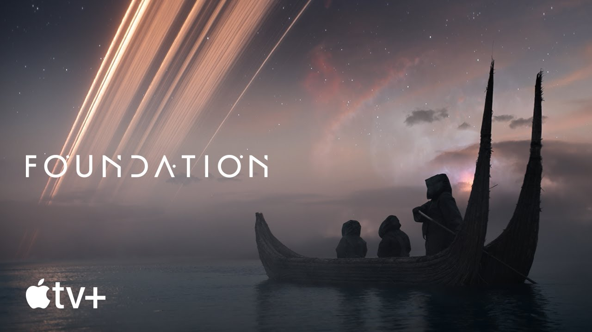

Foundation season 2: cast, plot and everything we know so far
Foundation season 2 is in the works for Apple TV Plus. The streamer’s flagship sci-fi series was renewed for another outing in October 2021 – which isn’t a huge surprise, given how much money, time and effort has been poured into the show thus far...
Read more

It stars Jared Harris, was filmed in Ireland and cost $45m to make. So is it any good?
A long time ago, in a galaxy far, far away, Isaac Asimov wrote one of the most beloved science-fiction sagas of all time. Foundation, a sprawling history of the far future, has now been adapted for the bingewatch generation. But the source material...
Read more

New Foundation trailer teases Apple TV Plus’ ambitious sci-fi epic
Last week Apple revealed that Foundation, the upcoming sc-fi show based on a series of books by Isaac Asimov, would debut on Apple TV Plus in September. Now we have something even better: a proper trailer. It’s the first good look at the show since the debut teaser last year...
Read more

Review: Foundation could be Apple TV’s big hit
Ever since the launch of Apple TV+, Apple has been playing catch up. As the company forays into the world of streaming, it goes up against incredibly stiff competition from Netflix, Hulu, Amazon Prime Video and HBO Max. All of these services have a hit show: Netflix...
Read more